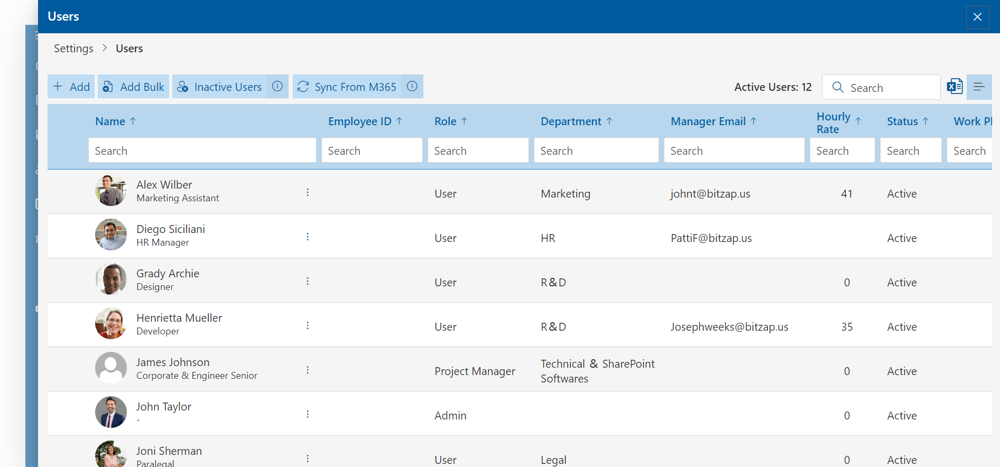

- Admin has full control.
- Admin can tune the Timesheet 365 application.
- Admin can edit or delete the approved timesheet.
- Admin can approve the timesheet for all projects if approval settings are enabled.
- Can submit the timesheet on behalf of their project team members.
- Can view the pending timesheet for the week of the user and send the reminder notification.
- Can approve timesheets for their project managers and project team members.
- Can add tasks and activities to their projects.
- Can view and download the timesheet report of their projects.
- Can approve timesheets for their project team members.
- Can add tasks and activities to their projects.
- Can submit the timesheet on behalf of their project team members.
- Can view and download the timesheet reports of their projects.
- Can add tasks and activities to their projects.
- Can view and download the timesheet report of their projects.
- Can just view all clients, projects, tasks, and task status.
- Can view and download the timesheet report of all projects.
- Just submit the timesheet and view their timesheet status.
- Can’t access the application.
Users
Admin can add users over here with various roles like the user, project manager, program manager, project observer, and coordinator. Use Add button to add a single user and use the Add Bulk button to add multiple users. Updated user details (Title, department, and manager name) in M365 can be updated same in the user page by clicking on Sync from M365 button.

Importance of Roles and permissions:
Admin:
Program Manager:
Project Manager:
Project Observer:
Project Coordinator:
Users: